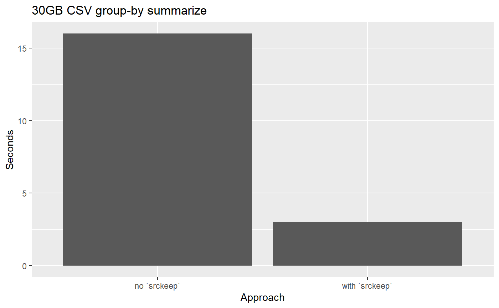

{disk.frame} can be more ‘epic’
more-epic.RmdSomeone wrote a blog about {disk.frame} being “epic”
Mr Bruno Rodrigues had kindly written a nice blog post titled ‘{disk.frame} is epic’. In the post, he compared {disk.frame}’s performance vs Spark’s on doing a simple group-by operation. The task is done on a single-machine and hence is not the ideal use-case for Spark. However, in an earlier post, Bruno had shown how Spark can be used for this use case. This is symptomatic of what I call the “premature adoption of Spark syndrome”. It’s not hard to find examples where Spark is used when a more light-weight tool like Dask or {disk.frame} could be more efficient. There is no need to use a sledgehammer to crack a nut. In data science, what a “nut” can represent is getting larger and larger. Ten years ago, a 1GB (in CSV) dataset can be a struggle for R and Python, as many machines back then were still 32bit and hence did not have more than 4GB of RAM in general. Nowadays, 16GB laptop are common place, so any file less than 4GB in size can be considered a “nut”. Furthermore, if you use a tool like {disk.frame} which keeps the data on-disk until you need to process it, then the “nut” you can crack is now substantially larger than 4GB. I would argue, the sledgehammer that is Spark should only be considered for much larger datasets. I don’t want to put a number to it, but the largest dataset I have dealt with is the Fannie Mae dataset which is about 200GB in size in CSV format.
How to make {disk.frame} more ‘epic’?
If you follow this post by Bruno, you will end up with a 30GB CSV file. But this 30GB file was made by row-appending 303 files (size ranging from 70MB to 143MB) together. I will you a few ways to handle such data. As usual, let’s start by setting up {disk.frame}
library(disk.frame)
# this willl set disk.frame with multiple workers
setup_disk.frame()
# this will allow unlimited amount of data to be passed from worker to worker
options(future.globals.maxSize = Inf)Load the individuals files
The best way to use {disk.frame} is to load the individual files, as csv_to_disk.frame allows a vector of files to be used as input:
path_to_files = "c:/data/AirOnTimeCSV"
list.files(path_to_files, patter="air", full.names = TRUE) %>% head
#> [1] "c:/data/AirOnTimeCSV/airOT198710.csv" "c:/data/AirOnTimeCSV/airOT198711.csv"
#> [3] "c:/data/AirOnTimeCSV/airOT198712.csv" "c:/data/AirOnTimeCSV/airOT198801.csv"
#> [5] "c:/data/AirOnTimeCSV/airOT198802.csv" "c:/data/AirOnTimeCSV/airOT198803.csv"However, there is always a danger with importing from CSVs, especially when importing from multiple CSVs. The chief danger is this: CSV do not encode the type of the columns. Hence the column types need to be inferred. However, when inferring the column type, we only use the first few thousand rows. This is fine most of the time. However, there are times when the column type inferred using the first few thousand rows isn’t compatible with data that comes after. That’s why you will see an error
when running the below code
list_files = list.files(path_to_files, patter="air", full.names = TRUE)
system.time(flights.df <- csv_to_disk.frame(list_files, co))I need to come up with a framework to help with these types of task, but for now, you should use the colClasses argument whenever possible to set the column types. For example,
list_files = list.files(path_to_files, patter="air", full.names = TRUE)
system.time(a <- csv_to_disk.frame(
list_files,
colClasses = list(character = c("WHEELS_OFF", "WHEELS_ON"))
))which yielded
#> csv_to_disk.frame: you are trying to read multiple files.
#> Please use colClasses to set column types to minimize the chance of a failed read
#> -- Converting CSVs to disk.frame --
#> Converting 303 CSVs to 36 disk.frame each consisting of 36 chunks (Stage 1 of 2):
#>
#> Stage 1 or 2 took: 00:01:47 elapsed (0.170s cpu)
#>
#> Row-binding the 36 disk.frames together to form one large disk.frame (Stage 2 of 2):
#> Creating the disk.frame at C:\Users\RTX2080\AppData\Local\Temp\Rtmp6VQrsK\file1a1c77035a94.df
#> Appending disk.frames:
#>
#> Stage 2 of 2 took: 00:01:01 elapsed (0.340s cpu)
#> -----------------------------------------------------
#> Stage 1 & 2 in total took: 00:02:48 elapsed (0.510s cpu)
#> user system elapsed
#> 0.51 0.32 168.72As you can see the the 303 files are converted to a disk.frame in about ~3mins, this much faster than Spark.
Load one large-file (splitting)
However, in real life you may be given one large CSV and told to work from there. In Linux or MacOS, we can use the split command to split up the file first, and apply the previous strategy. But on Windows, this isn’t trivial unless you have installed some nix tools (e.g. git bash).
Starting from {disk.frame} v0.1.1, we have something to help with this. When you call csv_to_disk.frame with the in_chunk_size argument, then the big file will be split into smaller files using {bigreadr} before reading. This happen automatically.
Splitting up a large file might take a few minutes, but once the file is split, we can use multiple cores to process the split-up files in parallel! The performance gain there might offset the overhead of splitting a file.
As mentioned, the key is setting argument in_chunk_size to a value, which will activate the file splitting
path_to_data = "c:/data/"
# read 10 millions at once
in_chunk_size = 1e7
system.time(csv_to_disk.frame(
file.path(path_to_data, "combined.csv"),
in_chunk_size = in_chunk_size,
colClasses = list(character = c("WHEELS_OFF","WHEELS_ON"))
))which yielded
#> -----------------------------------------------------
#> Stage 1 of 2: splitting the file c:/data//combined.csv into smallers files:
#> Destination: C:\Users\RTX2080\AppData\Local\Temp\Rtmp6VQrsK\file1a1c22af50f3
#> -----------------------------------------------------
#> Stage 1 of 2 took: 00:02:06 elapsed (00:01:15 cpu)
#> -----------------------------------------------------
#> Stage 2 of 2: Converting the smaller files into disk.frame
#> -----------------------------------------------------
#> csv_to_disk.frame: you are trying to read multiple files.
#> Please use colClasses to set column types to minimize the chance of a failed read
#> -- Converting CSVs to disk.frame --
#> Converting 15 CSVs to 36 disk.frame each consisting of 36 chunks (Stage 1 of 2):
#>
#> Stage 1 or 2 took: 54.0s elapsed (0.120s cpu)
#>
#> Row-binding the 36 disk.frames together to form one large disk.frame (Stage 2 of 2):
#> Creating the disk.frame at C:\Users\RTX2080\AppData\Local\Temp\Rtmp6VQrsK\file1a1c680f2305.df
#> Appending disk.frames:
#>
#> Stage 2 of 2 took: 36.0s elapsed (0.200s cpu)
#> -----------------------------------------------------
#> Stage 1 & 2 in total took: 00:01:29 elapsed (0.320s cpu)
#> Stage 2 of 2 took: 00:01:29 elapsed (0.320s cpu)
#> -----------------------------------------------------
#> Stage 2 & 2 took: 00:03:36 elapsed (00:01:15 cpu)
#> -----------------------------------------------------
#> user system elapsed
#> 75.79 47.89 216.42As you can see, this takes longer than loading the individual files approach. I am working on a guess the in_chunk_size feature so that in_chunk_size="guess" will work in the future, so the user doesn’t have to input a manual in_chunk_size.
Load one large-file (no splitting)
Split up the file will effectively double the amount of disk space needed. We have the original file and we need additional space equal to the size of the original file to store the split files. This is not always feasible and that’s why you can specify the LaF backend which was shown in Bruno’s post but repeated here for completeness. The problem with a LaF backend and reading one big file is that it can NOT be parallelized and hence it is much slower than the other approaches.
path_to_data = "c:/data/"
# read 10 millions at once
in_chunk_size = 1e7
system.time(flights.df <- csv_to_disk.frame(
paste0(path_to_data, "combined.csv"),
in_chunk_size = in_chunk_size,
backend = "LaF"))there were multiple warnings
#> Loading required namespace: LaF
#> Warning in FUN(X[[i]], ...): Unsupported type 'logical'; using default type
#> 'string'and the timings were
As can be seen LaF works and can detect the column types automatically. However it is slower than the default backend which is data.table.

Can {disk.frame} be even more “epic”?
Well yes! We can actually speed up the group-by operation that Bruno did by using srckeep. The use of srckeep can’t be emphasized enough! It works by reading from disk only the columns needed for the analysis, and hence disk IO time is (drastically) reduced! However, we do have to live with the two-stage group-by annoyance for now.
tic = Sys.time()
# doing group-by in two-stages which is annoying; I am working on something better
mean_dep_delay <- flights.df %>%
srckeep(c("YEAR", "MONTH", "DAY_OF_MONTH", "DEP_DELAY")) %>%
chunk_group_by(YEAR, MONTH, DAY_OF_MONTH) %>%
chunk_summarise(sum_delay = sum(DEP_DELAY, na.rm = TRUE), n = n()) %>%
collect() %>%
group_by(YEAR, MONTH, DAY_OF_MONTH) %>%
summarise(mean_delay = sum(sum_delay)/sum(n))
(toc = Sys.time() - tic)
#> Time difference of 2.800005 secsCompare the above the to timing without srckeep
tic = Sys.time()
mean_dep_delay <- flights.df %>%
chunk_group_by(YEAR, MONTH, DAY_OF_MONTH) %>%
chunk_summarise(sum_delay = sum(DEP_DELAY, na.rm = TRUE), n = n()) %>%
collect() %>%
group_by(YEAR, MONTH, DAY_OF_MONTH) %>%
summarise(mean_delay = sum(sum_delay)/sum(n))
(toc = Sys.time() - tic)
#> Time difference of 15.62312 secsOn my computer, with srckeep the timing is only ~3 seconds and without it is 16 seconds!

Conclusion
So there you go! {disk.frame} can be even more “epic”! Here are the two main take-aways
- Load CSV files as many individual files if possible to take advantage of multi-core parallelism
-
srckeepis your friend! Disk IO is often the bottleneck in data manipulation, and you can reduce Disk IO by specifying only columns that you will use withsrckeep(c(columns1, columns2, ...)).
Advertisements
Open Collective
If you like disk.frame and want to speed up its development or perhaps you have a feature request? Please consider sponsoring {disk.frame} on Open Collective. Your logo will show up here with a link to your website.

Contact me for consulting
Do you need help with machine learning and data science in R, Python, or Julia? I am available for Machine Learning/Data Science/R/Python/Julia consulting! Email me